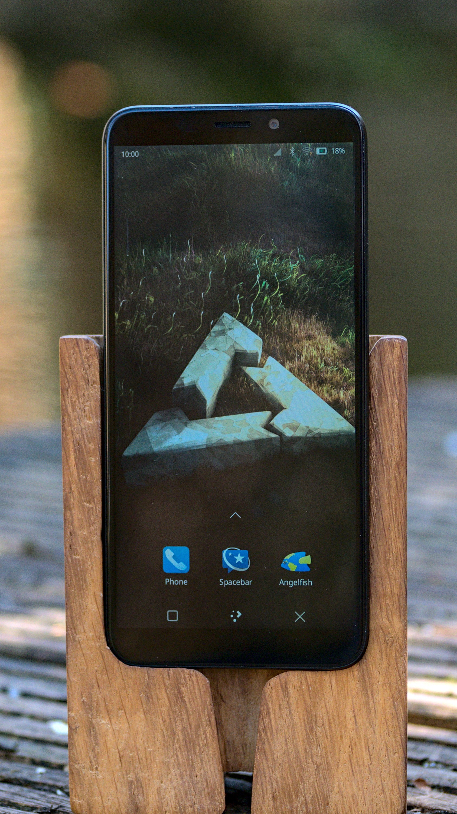

PINE64 PinePhone Pro (pine64-pinephonepro)
|

A PinePhone Pro running Plasma Mobile |
|
| Manufacturer | PINE64 |
|---|---|
| Name | PinePhone Pro |
| Codename | pine64-pinephonepro |
| Released | 2021 |
| Category | testing |
| Original software | postmarketOS |
| postmarketOS kernel | 5.16 |
| Hardware | |
| Chipset | Rockchip rk3399s |
| CPU | 4x 1.5 GHz Cortex-A53 & 2x 2Ghz Cortex-A72 |
| GPU | Mali-T860 MP4 |
| Display | 720x1440 IPS |
| Storage | 128 GB |
| Memory | 4 GB |
| Architecture | aarch64 |
| Non-Android based device | ✔ |
| Unixbench Whet/Dhry score | 2304.8 |
{kind=link}
| USB Networking |
Works
|
|---|---|
| Flashing |
Unavailable
|
| Touchscreen |
Works
|
| Display |
Works
|
| WiFi |
Works
|
| FDE |
Works
|
| Mainline |
Works
|
| Battery |
Partial
|
| 3D Acceleration |
Works
|
| Audio |
Works
|
| Bluetooth |
Works
|
| Camera |
Broken
|
| GPS |
Works
|
| Mobile data |
Works
|
| SMS |
Works
|
| Calls |
Broken
|
| USB OTG |
Broken
|
| NFC |
Unavailable
|
| Accelerometer |
Works
|
|---|---|
| Magnetometer |
|
| Ambient Light |
|
| Proximity |
|
| Hall Effect |
|
| Ir TX |
|
|---|---|
| TrustZone |
|
The
PinePhone Pro
is the second version of the PinePhone, adding in an rk3399 SoC just like the other Pro-series products from PINE64. If you have a Developer Edition, make sure to read
PINE64 PinePhone Pro Development
.
Contributors
Users owning this device
- Aleksander ( Notes: WWAN stack tinkering)
- Anjanmomi
- Danct12
- Kalube ( Notes: Development / Testing)
- Ollieparanoid
- Proycon
- PureTryOut
Installing Tow-Boot on the SPI
Since 2022-03 , the supported way to run postmarketOS on the PinePhone Pro is with Tow-Boot flashed to the SPI. See this post for reasoning. Once installed, the plan is to upgrade Tow-Boot from within postmarketOS (and other distributions) through fwupd, though that is not yet implemented.
Explorer Edition / Development Edition
While we expect that future revisions of the PinePhone Pro will come with Tow-Boot pre-installed, you will need to install it yourself for the Explorer Edition and Development Edition.
Download the latest Tow-Boot release for the PinePhone Pro from the releases page , then follow the "Installing to SPI" instructions in the official manual .
If you have the Developer Edition, one way to get it to boot from SD card in order to install Tow-Boot is nuking the factory AOSP installation .
Installing postmarketOS
Since this device is not in the community category yet, we do not yet offer pre-built postmarketOS images for it. The recommended way is installing through pmbootstrap.
eMMC
|
|
Only Tow-Boot on the SPI is supported! If you installed Tow-Boot in "shared storage mode", you will overwrite it here and render your phone unbootable! |
Run
lsblk
on your PC to see available storage devices. Connect your PinePhone Pro to your PC with an USB cable. Turn it on, and wait until Tow-Boot lets the phone vibrate for the first time. Press the volume up button, until shortly after it vibrated for the second time. The LED color will change to blue, indicating that it is now in USB Mass Storage mode.
Run
lsblk
again and note which device appeared, this is the eMMC of your PinePhone Pro. Now perform the same installation steps as for SD card below, but specify the path to your PinePhone's eMMC as
--sdcard
. When done, hold the power button for 5 seconds. The PinePhone Pro should reboot into the postmarketOS installation (without pressing a volume button during boot, eMMC is default).
SD card
|
|
FDE might be broken currently with the PinePhone Pro, see pmaports#1477 . Further investigation and help with fixing welcome, it's probably something trivial. |
$ pmbootstrap init # vendor: pine64, device: pinephonepro
$ pmbootstrap install --sdcard=/dev/mmcblk... # add --fde for full disk encryption
After that, unplug the microSD card from your PC, put it in your PinePhone Pro. Turn it on, and wait until Tow-Boot lets the phone vibrate for the first time. Press the volume down button, until shortly after it vibrated for the second time. The LED color will change to aqua, and stay in this color for a few more seconds with a black screen. Then the postmarketOS loading screen should boot up. If the LED is blinking, then boot from SD failed.
Serial console
The PinePhone Pro has the standard PINE64 serial port in the headphone connector, it's activated by the 6th contact on the DIP switch. If the switch is on then the headphone connector is in audio mode, if it's off then it's in UART mode.
The uart is 1500000n8
The pinout for the serial connector on the headphone jack is:
- Tip: RX
- Ring: TX
- Sleeve: GND
The serial connection is 3.3V
You can also buy the debug cable from PINE64 Store . The store cable uses a 4 ring plug, as seen in the PDF , but a 3 ring plug works just as well.
Hardware switches
There's a 6 contact DIP switch on the back of the phone underneath the back cover. The 6 switches are for enabling/disabling hardware components. The switch has tiny numbers 1-6 beneath the contacts, moving the contact up sets that contact on.
| # | Off | On |
|---|---|---|
| 1 | Modem disabled | Modem enabled |
| 2 | Wifi/BT disabled | Wifi/BT enabled |
| 3 | Microphone disabled | Microphone enabled |
| 4 | Rear camera disabled | Rear camera enabled |
| 5 | Front camera disabled | Front camera enabled |
| 6 | Headphone UART mode | Headphone audio mode |
Expansion port
There is a 2x3 grid of pogo pins on the back of the PinePhone for connecting a back cover with extra hardware like an extended battery case or a keyboard case. The pinout for this connector:
| Interrupt | SDA | SCL |
| 5V / VBUS | VBAT | GND |
The VBUS pin is powered by USB and is 5V. The second power pin is VBAT, which connects to the battery voltage. The I2C and interrupt lines have pull-ups on the phone side. The I2C lines are pulled up to 3V3 by the phone.
Components
| Component | Model | Driver |
|---|---|---|
| Touchscreen | Goodix GT917S | TOUCHSCREEN_GOODIX |
| Rear camera | IMX 258 | CONFIG_VIDEO_IMX258 |
| Camera flash | Awinic AW3641EDNR | ? |
| Front camera | OmniVision OV8858 | ? |
| LCD | Himax HX8394 compatible | CONFIG_DRM_PANEL_SITRONIX_ST7703 |
| WiFi | Ampak AP6335 | CONFIG_B43_SDIO |
| Bluetooth | Ampak AP6335 | ? |
| Modem | Quectel EC25-G | USB_NET_QMI_WWAN |
| GNSS/GPS | Quectel EC25-G | CONFIG_USB_SERIAL_OPTION |
| Notification LED | LED0603RGB | LEDS_GPIO |
See also
- pmaports!2870 : pine64-pinephonepro: switch to UEFI booting